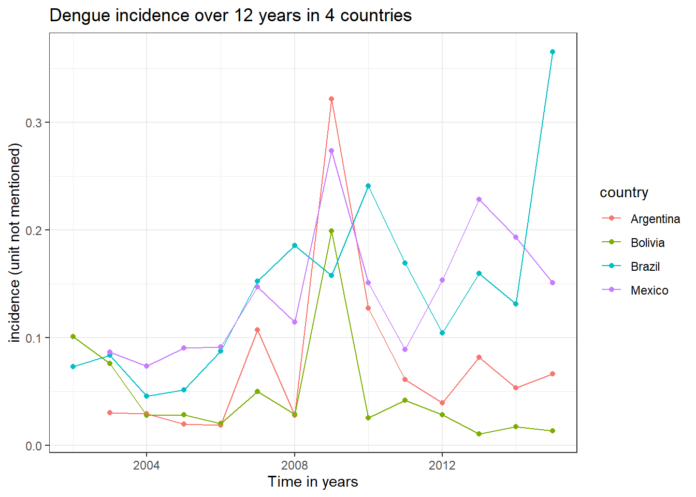

Free space
Front page Data visualisation Directory structure SQL R-package Zotero Reproductibility CV The future
library(ggplot2)
library(tidyverse)For my free Space, I will study this site. in order to find information about using bacterial identification using machine learning.
In this article, there is a link too the site agar.neurosys.com which contains a dataset containing picture of agarplates in different conditions
Conclusion based on the site: this is way too complicated to start out with. Trying to find a simpler introduction to machine learning, specifically in R
Trying this link, mayhaps this’ll give a better introduction.
Would appear that a technique called “KNN” might be a good algorythm to start with. Gonna follow the tutorial the previous link gives, using the “iris” dataset
First steps are too really undersand your data, and too visualise your data. So:
Sepals are modified leaves which encase and protect the flower before it blooms
Petals are modified leaves that surround the reproductive parts of the flower.
iris %>% ggplot(aes(x=Sepal.Length, y=Sepal.Width, colour=Species))+
geom_point()
iris %>% ggplot(aes(x=Petal.Length, y=Petal.Width, colour=Species))+
geom_point()
str(iris)## 'data.frame': 150 obs. of 5 variables:
## $ Sepal.Length: num 5.1 4.9 4.7 4.6 5 5.4 4.6 5 4.4 4.9 ...
## $ Sepal.Width : num 3.5 3 3.2 3.1 3.6 3.9 3.4 3.4 2.9 3.1 ...
## $ Petal.Length: num 1.4 1.4 1.3 1.5 1.4 1.7 1.4 1.5 1.4 1.5 ...
## $ Petal.Width : num 0.2 0.2 0.2 0.2 0.2 0.4 0.3 0.2 0.2 0.1 ...
## $ Species : Factor w/ 3 levels "setosa","versicolor",..: 1 1 1 1 1 1 1 1 1 1 ...table(iris$Species)##
## setosa versicolor virginica
## 50 50 50Apparently, normalising is very important in machine learning. Using summary, we can check if datasets are too far appart
summary(iris)## Sepal.Length Sepal.Width Petal.Length Petal.Width Species
## Min. :4.300 Min. :2.000 Min. :1.000 Min. :0.100 setosa :50
## 1st Qu.:5.100 1st Qu.:2.800 1st Qu.:1.600 1st Qu.:0.300 versicolor:50
## Median :5.800 Median :3.000 Median :4.350 Median :1.300 virginica :50
## Mean :5.843 Mean :3.057 Mean :3.758 Mean :1.199
## 3rd Qu.:6.400 3rd Qu.:3.300 3rd Qu.:5.100 3rd Qu.:1.800
## Max. :7.900 Max. :4.400 Max. :6.900 Max. :2.500Ranges appear to be within 0.1-7.9, a factor 10 difference. Seems reasonable enough.
Just in case though, you usually have to create normalising functions yourself, so here’s one anyway, created by the site and broken down for me to understand it
normalize(iris[1:4])## Sepal.Length Sepal.Width Petal.Length Petal.Width
## 1 0.6410256 0.4358974 0.1666667 0.01282051
## 2 0.6153846 0.3717949 0.1666667 0.01282051
## 3 0.5897436 0.3974359 0.1538462 0.01282051
## 4 0.5769231 0.3846154 0.1794872 0.01282051
## 5 0.6282051 0.4487179 0.1666667 0.01282051
## 6 0.6794872 0.4871795 0.2051282 0.03846154
## 7 0.5769231 0.4230769 0.1666667 0.02564103
## 8 0.6282051 0.4230769 0.1794872 0.01282051
## 9 0.5512821 0.3589744 0.1666667 0.01282051
## 10 0.6153846 0.3846154 0.1794872 0.00000000
## 11 0.6794872 0.4615385 0.1794872 0.01282051
## 12 0.6025641 0.4230769 0.1923077 0.01282051
## 13 0.6025641 0.3717949 0.1666667 0.00000000
## 14 0.5384615 0.3717949 0.1282051 0.00000000
## 15 0.7307692 0.5000000 0.1410256 0.01282051
## 16 0.7179487 0.5512821 0.1794872 0.03846154
## 17 0.6794872 0.4871795 0.1538462 0.03846154
## 18 0.6410256 0.4358974 0.1666667 0.02564103
## 19 0.7179487 0.4743590 0.2051282 0.02564103
## 20 0.6410256 0.4743590 0.1794872 0.02564103
## 21 0.6794872 0.4230769 0.2051282 0.01282051
## 22 0.6410256 0.4615385 0.1794872 0.03846154
## 23 0.5769231 0.4487179 0.1153846 0.01282051
## 24 0.6410256 0.4102564 0.2051282 0.05128205
## 25 0.6025641 0.4230769 0.2307692 0.01282051
## 26 0.6282051 0.3717949 0.1923077 0.01282051
## 27 0.6282051 0.4230769 0.1923077 0.03846154
## 28 0.6538462 0.4358974 0.1794872 0.01282051
## 29 0.6538462 0.4230769 0.1666667 0.01282051
## 30 0.5897436 0.3974359 0.1923077 0.01282051
## 31 0.6025641 0.3846154 0.1923077 0.01282051
## 32 0.6794872 0.4230769 0.1794872 0.03846154
## 33 0.6538462 0.5128205 0.1794872 0.00000000
## 34 0.6923077 0.5256410 0.1666667 0.01282051
## 35 0.6153846 0.3846154 0.1794872 0.01282051
## 36 0.6282051 0.3974359 0.1410256 0.01282051
## 37 0.6923077 0.4358974 0.1538462 0.01282051
## 38 0.6153846 0.4487179 0.1666667 0.00000000
## 39 0.5512821 0.3717949 0.1538462 0.01282051
## 40 0.6410256 0.4230769 0.1794872 0.01282051
## 41 0.6282051 0.4358974 0.1538462 0.02564103
## 42 0.5641026 0.2820513 0.1538462 0.02564103
## 43 0.5512821 0.3974359 0.1538462 0.01282051
## 44 0.6282051 0.4358974 0.1923077 0.06410256
## 45 0.6410256 0.4743590 0.2307692 0.03846154
## 46 0.6025641 0.3717949 0.1666667 0.02564103
## 47 0.6410256 0.4743590 0.1923077 0.01282051
## 48 0.5769231 0.3974359 0.1666667 0.01282051
## 49 0.6666667 0.4615385 0.1794872 0.01282051
## 50 0.6282051 0.4102564 0.1666667 0.01282051
## 51 0.8846154 0.3974359 0.5897436 0.16666667
## 52 0.8076923 0.3974359 0.5641026 0.17948718
## 53 0.8717949 0.3846154 0.6153846 0.17948718
## 54 0.6923077 0.2820513 0.5000000 0.15384615
## 55 0.8205128 0.3461538 0.5769231 0.17948718
## 56 0.7179487 0.3461538 0.5641026 0.15384615
## 57 0.7948718 0.4102564 0.5897436 0.19230769
## 58 0.6153846 0.2948718 0.4102564 0.11538462
## 59 0.8333333 0.3589744 0.5769231 0.15384615
## 60 0.6538462 0.3333333 0.4871795 0.16666667
## 61 0.6282051 0.2435897 0.4358974 0.11538462
## 62 0.7435897 0.3717949 0.5256410 0.17948718
## 63 0.7564103 0.2692308 0.5000000 0.11538462
## 64 0.7692308 0.3589744 0.5897436 0.16666667
## 65 0.7051282 0.3589744 0.4487179 0.15384615
## 66 0.8461538 0.3846154 0.5512821 0.16666667
## 67 0.7051282 0.3717949 0.5641026 0.17948718
## 68 0.7307692 0.3333333 0.5128205 0.11538462
## 69 0.7820513 0.2692308 0.5641026 0.17948718
## 70 0.7051282 0.3076923 0.4871795 0.12820513
## 71 0.7435897 0.3974359 0.6025641 0.21794872
## 72 0.7692308 0.3461538 0.5000000 0.15384615
## 73 0.7948718 0.3076923 0.6153846 0.17948718
## 74 0.7692308 0.3461538 0.5897436 0.14102564
## 75 0.8076923 0.3589744 0.5384615 0.15384615
## 76 0.8333333 0.3717949 0.5512821 0.16666667
## 77 0.8589744 0.3461538 0.6025641 0.16666667
## 78 0.8461538 0.3717949 0.6282051 0.20512821
## 79 0.7564103 0.3589744 0.5641026 0.17948718
## 80 0.7179487 0.3205128 0.4358974 0.11538462
## 81 0.6923077 0.2948718 0.4743590 0.12820513
## 82 0.6923077 0.2948718 0.4615385 0.11538462
## 83 0.7307692 0.3333333 0.4871795 0.14102564
## 84 0.7564103 0.3333333 0.6410256 0.19230769
## 85 0.6794872 0.3717949 0.5641026 0.17948718
## 86 0.7564103 0.4230769 0.5641026 0.19230769
## 87 0.8461538 0.3846154 0.5897436 0.17948718
## 88 0.7948718 0.2820513 0.5512821 0.15384615
## 89 0.7051282 0.3717949 0.5128205 0.15384615
## 90 0.6923077 0.3076923 0.5000000 0.15384615
## 91 0.6923077 0.3205128 0.5512821 0.14102564
## 92 0.7692308 0.3717949 0.5769231 0.16666667
## 93 0.7307692 0.3205128 0.5000000 0.14102564
## 94 0.6282051 0.2820513 0.4102564 0.11538462
## 95 0.7051282 0.3333333 0.5256410 0.15384615
## 96 0.7179487 0.3717949 0.5256410 0.14102564
## 97 0.7179487 0.3589744 0.5256410 0.15384615
## 98 0.7820513 0.3589744 0.5384615 0.15384615
## 99 0.6410256 0.3076923 0.3717949 0.12820513
## 100 0.7179487 0.3461538 0.5128205 0.15384615
## 101 0.7948718 0.4102564 0.7564103 0.30769231
## 102 0.7307692 0.3333333 0.6410256 0.23076923
## 103 0.8974359 0.3717949 0.7435897 0.25641026
## 104 0.7948718 0.3589744 0.7051282 0.21794872
## 105 0.8205128 0.3717949 0.7307692 0.26923077
## 106 0.9615385 0.3717949 0.8333333 0.25641026
## 107 0.6153846 0.3076923 0.5641026 0.20512821
## 108 0.9230769 0.3589744 0.7948718 0.21794872
## 109 0.8461538 0.3076923 0.7307692 0.21794872
## 110 0.9102564 0.4487179 0.7692308 0.30769231
## 111 0.8205128 0.3974359 0.6410256 0.24358974
## 112 0.8076923 0.3333333 0.6666667 0.23076923
## 113 0.8589744 0.3717949 0.6923077 0.25641026
## 114 0.7179487 0.3076923 0.6282051 0.24358974
## 115 0.7307692 0.3461538 0.6410256 0.29487179
## 116 0.8076923 0.3974359 0.6666667 0.28205128
## 117 0.8205128 0.3717949 0.6923077 0.21794872
## 118 0.9743590 0.4743590 0.8461538 0.26923077
## 119 0.9743590 0.3205128 0.8717949 0.28205128
## 120 0.7564103 0.2692308 0.6282051 0.17948718
## 121 0.8717949 0.3974359 0.7179487 0.28205128
## 122 0.7051282 0.3461538 0.6153846 0.24358974
## 123 0.9743590 0.3461538 0.8461538 0.24358974
## 124 0.7948718 0.3333333 0.6153846 0.21794872
## 125 0.8461538 0.4102564 0.7179487 0.25641026
## 126 0.9102564 0.3974359 0.7564103 0.21794872
## 127 0.7820513 0.3461538 0.6025641 0.21794872
## 128 0.7692308 0.3717949 0.6153846 0.21794872
## 129 0.8076923 0.3461538 0.7051282 0.25641026
## 130 0.9102564 0.3717949 0.7307692 0.19230769
## 131 0.9358974 0.3461538 0.7692308 0.23076923
## 132 1.0000000 0.4743590 0.8076923 0.24358974
## 133 0.8076923 0.3461538 0.7051282 0.26923077
## 134 0.7948718 0.3461538 0.6410256 0.17948718
## 135 0.7692308 0.3205128 0.7051282 0.16666667
## 136 0.9743590 0.3717949 0.7692308 0.28205128
## 137 0.7948718 0.4230769 0.7051282 0.29487179
## 138 0.8076923 0.3846154 0.6923077 0.21794872
## 139 0.7564103 0.3717949 0.6025641 0.21794872
## 140 0.8717949 0.3846154 0.6794872 0.25641026
## 141 0.8461538 0.3846154 0.7051282 0.29487179
## 142 0.8717949 0.3846154 0.6410256 0.28205128
## 143 0.7307692 0.3333333 0.6410256 0.23076923
## 144 0.8589744 0.3974359 0.7435897 0.28205128
## 145 0.8461538 0.4102564 0.7179487 0.30769231
## 146 0.8461538 0.3717949 0.6538462 0.28205128
## 147 0.7948718 0.3076923 0.6282051 0.23076923
## 148 0.8205128 0.3717949 0.6538462 0.24358974
## 149 0.7820513 0.4230769 0.6794872 0.28205128
## 150 0.7435897 0.3717949 0.6410256 0.21794872#Generating a set where the the data is compensated for the lowest datapoint
num<-iris$Sepal.Length-min(iris$Sepal.Length)
#Generating the biggest difference in the dataset
denom<-max(iris$Sepal.Length)-min(iris$Sepal.Length)
#Generating the size of a datapoint relative to the maximum size of a datapoint.
num/denom ## [1] 0.22222222 0.16666667 0.11111111 0.08333333 0.19444444 0.30555556 0.08333333 0.19444444 0.02777778 0.16666667 0.30555556 0.13888889 0.13888889 0.00000000
## [15] 0.41666667 0.38888889 0.30555556 0.22222222 0.38888889 0.22222222 0.30555556 0.22222222 0.08333333 0.22222222 0.13888889 0.19444444 0.19444444 0.25000000
## [29] 0.25000000 0.11111111 0.13888889 0.30555556 0.25000000 0.33333333 0.16666667 0.19444444 0.33333333 0.16666667 0.02777778 0.22222222 0.19444444 0.05555556
## [43] 0.02777778 0.19444444 0.22222222 0.13888889 0.22222222 0.08333333 0.27777778 0.19444444 0.75000000 0.58333333 0.72222222 0.33333333 0.61111111 0.38888889
## [57] 0.55555556 0.16666667 0.63888889 0.25000000 0.19444444 0.44444444 0.47222222 0.50000000 0.36111111 0.66666667 0.36111111 0.41666667 0.52777778 0.36111111
## [71] 0.44444444 0.50000000 0.55555556 0.50000000 0.58333333 0.63888889 0.69444444 0.66666667 0.47222222 0.38888889 0.33333333 0.33333333 0.41666667 0.47222222
## [85] 0.30555556 0.47222222 0.66666667 0.55555556 0.36111111 0.33333333 0.33333333 0.50000000 0.41666667 0.19444444 0.36111111 0.38888889 0.38888889 0.52777778
## [99] 0.22222222 0.38888889 0.55555556 0.41666667 0.77777778 0.55555556 0.61111111 0.91666667 0.16666667 0.83333333 0.66666667 0.80555556 0.61111111 0.58333333
## [113] 0.69444444 0.38888889 0.41666667 0.58333333 0.61111111 0.94444444 0.94444444 0.47222222 0.72222222 0.36111111 0.94444444 0.55555556 0.66666667 0.80555556
## [127] 0.52777778 0.50000000 0.58333333 0.80555556 0.86111111 1.00000000 0.58333333 0.55555556 0.50000000 0.94444444 0.55555556 0.58333333 0.47222222 0.72222222
## [141] 0.66666667 0.72222222 0.41666667 0.69444444 0.66666667 0.66666667 0.55555556 0.61111111 0.52777778 0.44444444In order to properly train the algorythm, we must separate our data into 2 groups: a “training” group and a “test” group. Apparently, usually the “training group” is 2/3rds of the dataset, while the “test group” is one third of the dataset. Important is to give the algorythm equal amounts of each test condition, if we’d split the iris set into 2/3rds and 1/3rds it’d give 50 setosa, 50 versicolor and 0 virginica which would make the algorythm not recognize virginica at all. Thus, we use setseed and sample to generate a sample.